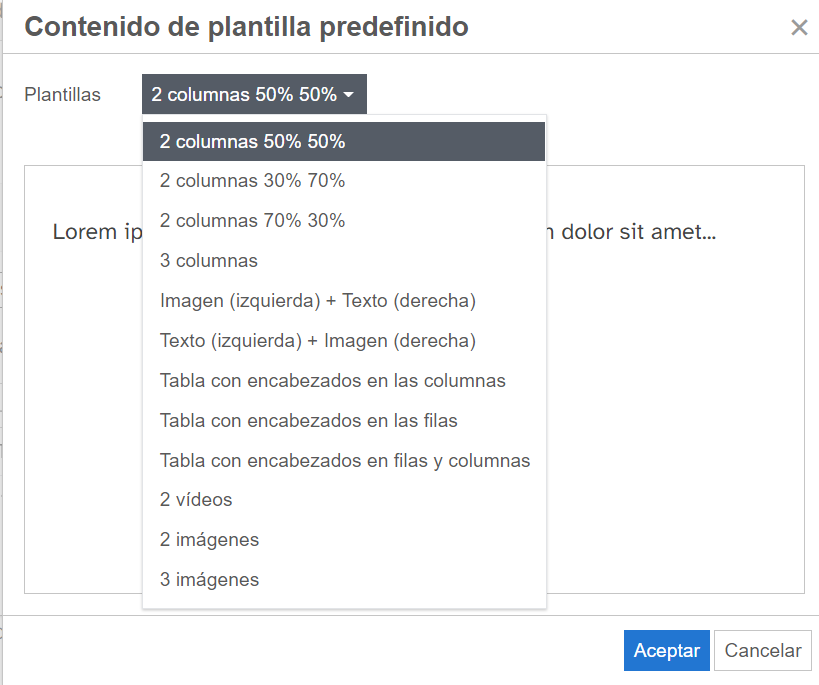

Plantillas accesibles
- En ningún caso se hará uso de una tabla para maquetar. Por ejemplo, para colocar una imagen centrada.
- En caso de necesidad de insertar dos imágenes alineadas, usar tabla con encabezado en filas, columnas o en filas y columnas, o de distribuir texto en dos columnas (simétricas o asimétricas), haremos uso de las plantillas accesibles predefinidas existentes en eXeLearning. Ver ejemplo en el apartado Nomenclatura de los REA y gestión de versiones.
Insertar --> Plantilla
